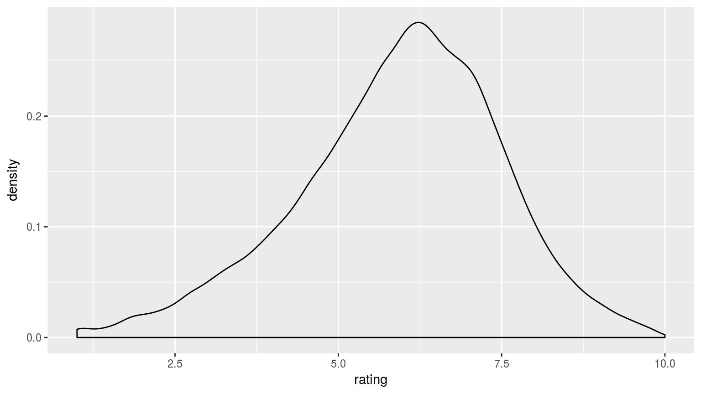

Markdown
Brian A. Fannin
Overview
What can I do?
- Write a book - http://adv-r.had.co.nz/
- Write a blog - PirateGrunt.com
- Create a website - http://rmarkdown.rstudio.com/
- Add a vignette to a package - http://yihui.name/knitr/demo/vignette/
- Publish research - https://github.com/rstudio/rticles
- Automate business intelligence
- Preserve your sanity
How can I do this?
Literate programming
Incorporate text (including markup) with computer instructions and the output from computer instructions.
“The practitioner of literate programming can be regarded as an essayist, whose main concern is with exposition and excellence of style.”
- Donald Knuth
Within the R world, this began with Sweave.
Sweave
- Incorporates or “weaves” R commands into a LateX document.
- Pretty old (first appeared in 2002)
- Only supports R as a programming language
- Only supports LateX for markup
- https://www.statistik.lmu.de/~leisch/Sweave/
- .Rnw -> R “noweb” http://www.cs.tufts.edu/~nr/noweb/
Sweave - how does it work?
- Write a markup document, just as you always would
- Include R code in “chunks”
For most people (or at least Yihui Xie), Sweave wasn’t enough. More output formats, more input languages, hooks, etc.
Enter knitr
knitr
- Same basic concept as Sweave
- Multi-language engine
- Multiple processing options
- knitr
- Rhtml-
- brew
- Others (Rrst, Rtex, Rasciidoc)
- http://yihui.name/knitr/
- cheat sheet - https://cran.r-project.org/web/packages/knitr/vignettes/knitr-refcard.pdf
knitr
Code chunks look a little different.
- We must specify the language engine
- Code chunks may use R expressions, i.e. we may conditionally execute
```{r echo = TRUE}
library(ggplot2)
library(ggplot2movies)
data(movies)
m <- ggplot(movies, aes(x = rating)) + geom_density()
m
```
knitr options
opts_knit$set(upload.fun = WrapWordpressUpload, base.url = NULL)
WrapWordpressUpload = function(file) {
result = RWordpress::uploadFile(file)
result$url
}
options(WordPressLogin = c(PirateGrunt = "myPassword")
, WordPressURL = "http://PirateGrunt.wordpress.com/xmlrpc.php")
RWordpress::knit2wp("MyCoolPost.Rmd"
, title = "Catchy title"
, publish = FALSE
, shortcode = TRUE
, categories = c("R"))knitr + Markdown = R markdown
- Unifies multiple output formats by having content written in markdown, rather than a specific markup language
- Once the markdown output is generated use
pandocto render in other markup languages - Comes for free with RStudio
Markdown
Markdown
“A Markdown-formatted document should be publishable as-is, as plain text, without looking like it’s been marked up with tags or formatting instructions.” – John Gruber
- Very simple syntax
- Human readable
- May be converted into other formats
- Read about the life of Aaron Swartz
- http://daringfireball.net/projects/markdown/
Pandoc
- Haskell tool written by John MacFarlane
- Recognizes that most markup languages have common features: level 1-n text, hyperlinks, tables, images
- MS Word uses XML -> that’s another markup language!
First we mark down, then we mark up
Got it? Good.
- Also, YAML.
YAML
YAML = “YAML Ain’t Markup Language”
“What It Is: YAML is a human friendly data serialization standard for all programming languages.”
---
title: "Fun with R Markdown"
author: "Brian A. Fannin"
date: "September 20, 2015"
output:
slidy_presentation:
self_contained: false
duration: 45
---Fun fact: JSON is a subset of YAML
R markdown from the command line
render(input, output_format = NULL, output_file = NULL, output_dir = NULL,
output_options = NULL, intermediates_dir = NULL,
runtime = c("auto", "static", "shiny"),
clean = TRUE, params = NULL, envir = parent.frame(),
quiet = FALSE, encoding = getOption("encoding"))rmarkdown::render(myFile, output)HTML
- CSS
- Build your own website
- Nothing stopping you from using JavaScript libraries like Bootstrap and D3.
- If you’re targeting HTML, you can use HTML within the R markdown document itself
- If you do, you’ll need to write or copy a fair bit of HTML, css and java script
- Blog like a boss
Other stuff
- Tables
- Customized reporting with
whisker - Jekyll
- Creating your own templates
Tables
Table data
xtable
library(xtable)
print(xtable(Master), type = 'html')| playerID | birthYear | birthMonth | birthDay | birthCountry | |
|---|---|---|---|---|---|
| 1 | aardsda01 | 1981 | 12 | 27 | USA |
| 2 | aaronha01 | 1934 | 2 | 5 | USA |
| 3 | aaronto01 | 1939 | 8 | 5 | USA |
| 4 | aasedo01 | 1954 | 9 | 8 | USA |
| 5 | abadan01 | 1972 | 8 | 25 | USA |
kable
knitr::kable(Master)| playerID | birthYear | birthMonth | birthDay | birthCountry |
|---|---|---|---|---|
| aardsda01 | 1981 | 12 | 27 | USA |
| aaronha01 | 1934 | 2 | 5 | USA |
| aaronto01 | 1939 | 8 | 5 | USA |
| aasedo01 | 1954 | 9 | 8 | USA |
| abadan01 | 1972 | 8 | 25 | USA |
pander
pander::pandoc.table(Master)| playerID | birthYear | birthMonth | birthDay | birthCountry |
|---|---|---|---|---|
| aardsda01 | 1981 | 12 | 27 | USA |
| aaronha01 | 1934 | 2 | 5 | USA |
| aaronto01 | 1939 | 8 | 5 | USA |
| aasedo01 | 1954 | 9 | 8 | USA |
| abadan01 | 1972 | 8 | 25 | USA |
DT
Tables
Of these options, I tend to use pander most often.
- Possible to allow the table to break across pages
- Easy to control where breaks happen
- Easy to align columns
DT is super awesome for easy data search. Loads of bells and whistles on the package site: https://rstudio.github.io/DT/.
Note that this discussion of tables has nothing to do with neat tabular output from functions like lm. For that, check out stargazer
Jekyll
- http://jekyllrb.com/
- Converts markdown into static HTML
- Great for blogging and simple page design
- Default engine for GitHub pages
- Liquid templating system
- See also: StaticDocs - https://github.com/hadley/staticdocs
Customized templates
- Possible to roll your own template
- Pandoc template:
- Uses a templating framework wherein field delimited by
$are replaced with YAML metadata, or command-line arguments - http://pandoc.org/demo/example9/templates.html
- Uses a templating framework wherein field delimited by
- RStudio will recognize “skeletons” in the dialog box for a new RMarkdown document
- http://rmarkdown.rstudio.com/developer_document_templates.html
Some cool pre-made templates

Customized template examples
Two more references
Exercise
Create a short vignette for the “momentus”" package. It must do the following:
- Show code examples
- Include at least one plot output
- Include at least one table
Extra credit:
- Use the pkgdown package to create a website documenting your package.